Conferencia Internacional por el Cambio Climático
Soluciones para un Futuro Sostenible

Día 1
(7 de noviembre de 2024)
- 09:00 - 10:00: "Inauguración y bienvenida" – Sala Principal.
- 10:15 - 11:30: "Los efectos del cambio climático en las zonas costeras" – Dr. Ana María Pérez.
- 11:45 - 13:00: "Soluciones tecnológicas para la sostenibilidad" – Prof. John Smith.
- 13:00 - 14:00: Pausa para almuerzo.
- 14:00 - 15:30: Panel de discusión: "Energía renovable y su impacto global" – Varios ponentes.
- 16:00 - 17:30: "Reducción de la huella de carbono en las empresas" – Alexandria Ocasio-Cortez.
Día 2
(8 de noviembre de 2024)
- 09:00 - 10:30: "El papel de los gobiernos en la lucha contra el cambio climático" – Dr. Carlos López.
- 10:45 - 12:00: "Innovaciones en agricultura sostenible" – Greta Thunberg.
- 12:00 - 13:30: Pausa para almuerzo.
- 13:30 - 15:00: Taller: "Cómo implementar la sostenibilidad en proyectos locales" – María Saralux Valbuena López.
- 15:15 - 16:45: "Cierre del evento y conclusiones" – Panel de expertos.